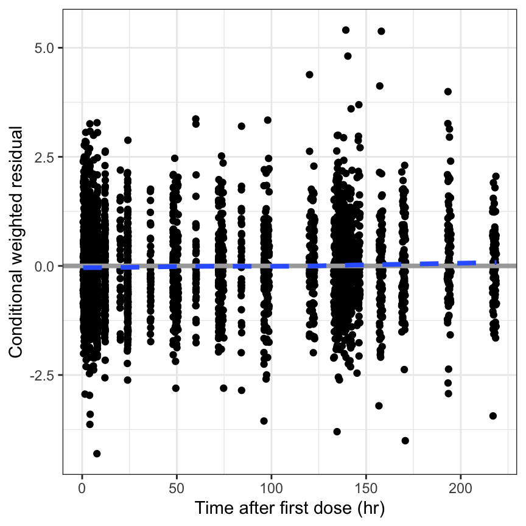
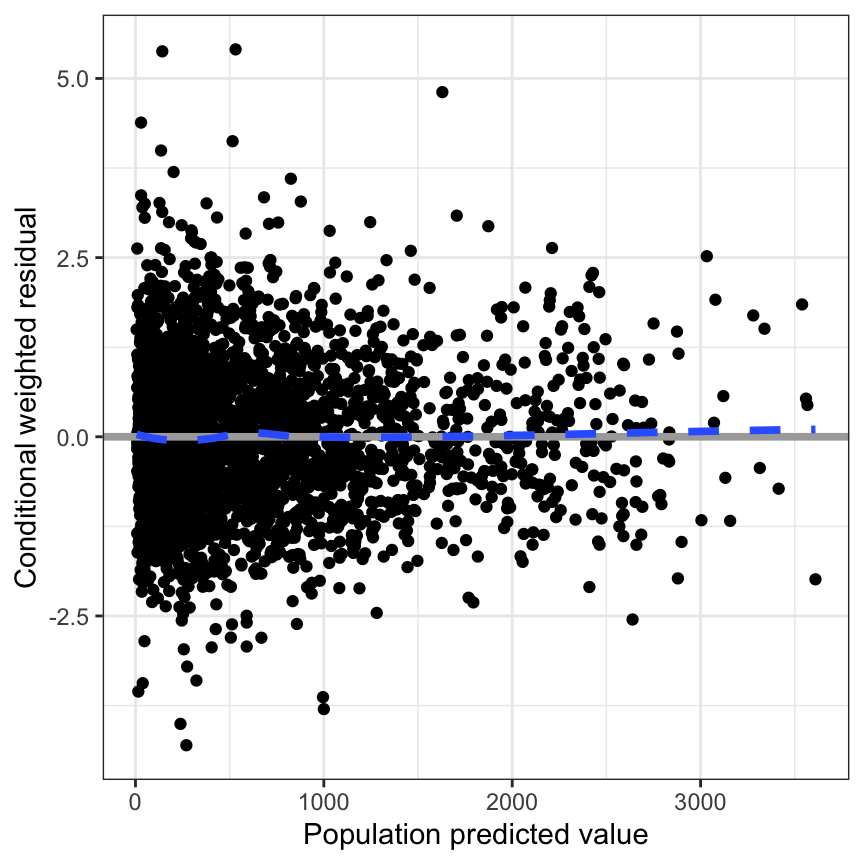

res_time(df)
[res_time]res_time(df)
[res_tafd]res_tafd(df)
[res_tad]res_tad(df)[res_pred]res_pred(df)
[res_cont]res_cont(df, x = "WT//Weight (kg)")This function is also vectorized in x.
res_cont(df, c("WT", "CRCL", "AST")) %>%
pm_grid()[res_cat]dplyr::count(df, STUDYc)# A tibble: 4 × 2
STUDYc n
<fct> <int>
1 SAD 424
2 MAD 1199
3 Renal 960
4 Hepatic 559res_cat(df, x = "STUDYc//Study type")
[res_hist]res_hist(df)
[wres_time]wres_time(df) [wres_tafd]wres_tafd(df)
[wres_tad]wres_tad(df)
[wres_pred]wres_pred(df)[wres_cont]This function is also vectorized in x.
wres_cont(df, x = "WT//Weight (kg)")
[wres_cat]wres_cat(df, x = "STUDYc//Study type")[wres_hist]wres_hist(df)[wres_q]wres_q(df)
[cwres_time]cwres_time(df)
[cwres_tafd]cwres_tafd(df)
[cwres_tad]cwres_tad(df)
[cwres_cont]cwres_cont(df, x = "WT//Weight (kg)")
Vectorized version
cwres_cont(df, covs) %>%
pm_grid(ncol = 2)[cwres_cat]cwres_cat(df, x = "STUDYc//Study type") 
cwres_cat(
df,
x = "STUDYc//Study type",
shown = FALSE
)Vectorized version
cwres_cat(
df,
x = c("STUDYc//Study", "RF//Renal Function")
) %>% pm_grid()
[cwres_hist]cwres_hist(df)
[cwres_pred]cwres_pred(df)
[cwres_q]cwres_q(df)